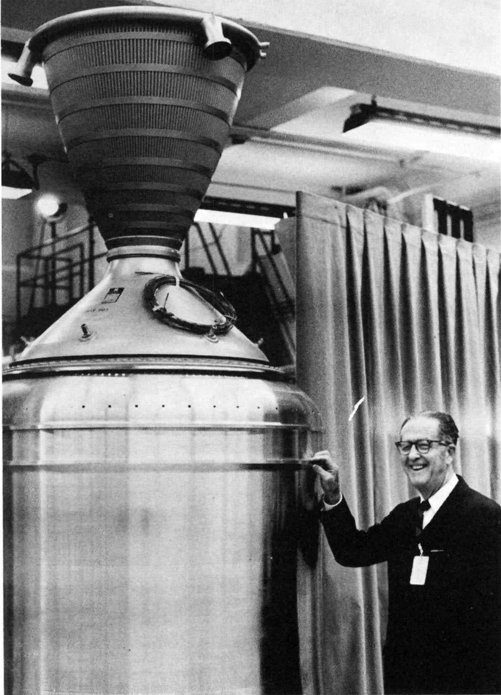
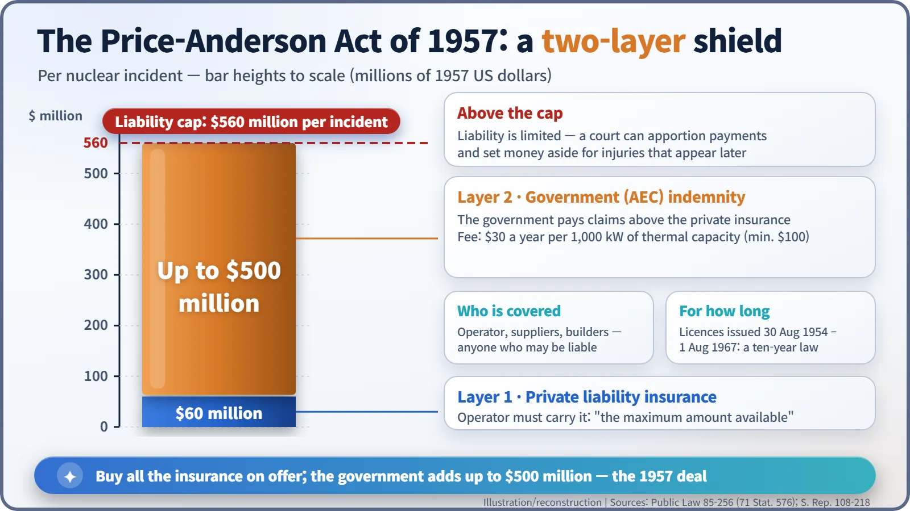
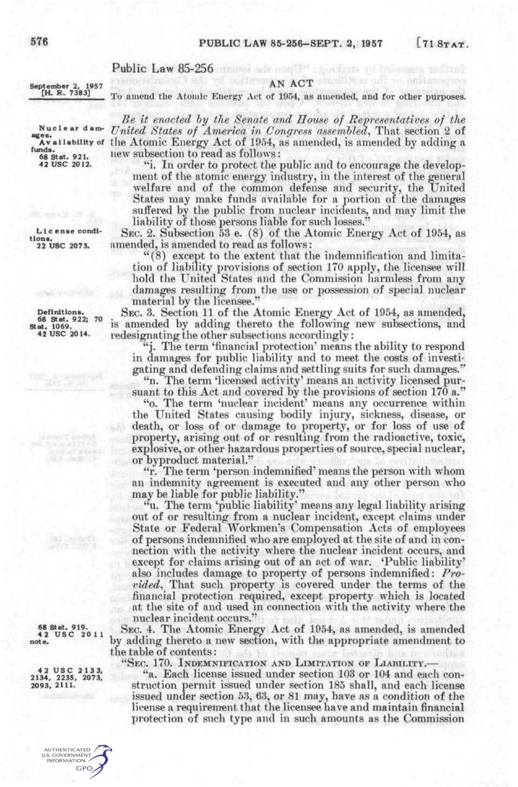
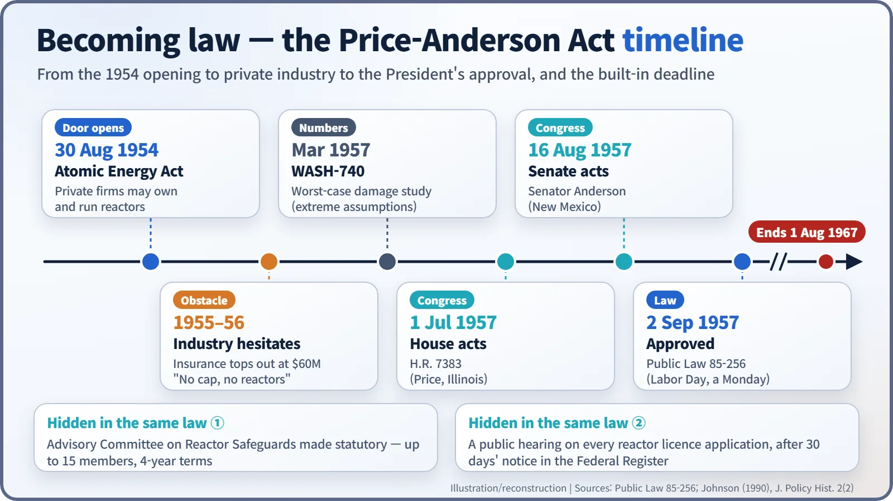

Nuclear History · 183
Open the Umbrella, Then Break Ground — The Price-Anderson Act of 1957 and the Birth of Nuclear Liability Cover
U.S. industry would not build reactors under unlimited liability; Congress answered with a two-layer shield, a ten-year deadline and new rules for safety review and public hearings.
The Atomic Energy Act of 1954 let private companies own reactors, but industry would not build them while an accident could mean unlimited liability. The Price-Anderson Act, approved on 2 September 1957, answered with two layers: $60 million of private insurance, topped by up to $500 million of government indemnity, for a $560 million cap per incident. The same law quietly made the reactor safety committee statutory and required public hearings on reactor licences.
"Cut it down the middle"
That, in essence, was the compromise offered in the mid-1950s by James T. Ramey, staff director of Congress's Joint Committee on Atomic Energy. One side wanted the government to stand behind nuclear accident claims without limit. The other asked why taxpayers should carry the risk of a private company's accident at all. Somewhere in between came a number: $500 million. The law built around it was approved on 2 September 1957 as Public Law 85-256, better known as the Price-Anderson Act. Its question was simple: if a big accident happens, who pays? [3] [1]
The door was open, but no one walked in
The Atomic Energy Act of 1954, signed on 30 August 1954, allowed private companies to own and operate nuclear reactors for the first time. Yet industry hesitated. The obstacle was not technology. It was liability.
A reactor accident might be very unlikely, but nobody could say how large the damage would be if one happened, and the company responsible would be liable for all of it. Insurers were stuck too. With no accident statistics, they could not price the risk, and no insurer could sell cover larger than its own capital. Pooling their resources, the most the private market could offer was about $60 million per accident. [2]
According to a 1986 article in the magazine Multinational Monitor, a General Electric representative told Congress "categorically" that without a liability limit the company would leave the nuclear field and stop work on the Dresden power station. A Westinghouse vice-president testified that his company would not build even a test reactor without protection. The door had been opened, but "unlimited liability" was blocking the threshold. [4]
Buy what the market sells; the government covers the rest
The answer came from the Joint Committee, and the law took its name from two of its members: Representative Charles Melvin Price (1905–1988) of Illinois and Senator Clinton P. Anderson (1895–1975) of New Mexico.

A first attempt in 1956 did not become law. In 1957 the House bill H.R. 7383 was taken up by the House on 1 July and by the Senate on 16 August, and President Eisenhower approved it on 2 September, which was Labor Day. The design can be pictured as a two-storey building: [3]
- Ground floor: the reactor operator must carry private liability insurance. The statute does not name a figure; it requires "the maximum amount available from private sources" for large power plants. In 1957 that meant $60 million.
- Upper floor: above that, the Atomic Energy Commission (AEC) would indemnify claims up to $500 million per incident. In return, operators paid a fee of $30 a year for every 1,000 kilowatts of thermal capacity.
- Roof: together the two floors gave a liability cap of $560 million per incident. If claims looked likely to exceed it, a federal court could apportion payments and set money aside for injuries that might appear only later.

Protection did not stop at the operator. The law covered "any other person who may be liable", so equipment suppliers and builders sat under the same umbrella. Victims could look to a single pool of money instead of working out whom to sue, and manufacturers were freed from open-ended liability. [1]
Where did $500 million come from?
The figure was not the product of careful calculation. According to the historian John W. Johnson (1990), it started from Ramey's split-the-difference compromise. Senator Anderson is reported to have said the limit was meant to solve the problem without frightening "the country or Congress to death". In March of the same year, the AEC's Brookhaven report, WASH-740, had described a far larger worst case under extreme assumptions, so the gap between the cap and the worst imaginable accident was controversial from the start. [3] [4]
The law was also temporary. Government indemnity applied only to licences issued before 1 August 1967. Congress expected that, within ten years, private insurance would grow enough for the government to step back. [2]
Two provisions hidden in the same law

Read the statute to the end and something surprising appears. Remember it only as an insurance law and you miss half of it. Section 5 turned the Advisory Committee on Reactor Safeguards (ACRS) into a statutory body of up to 15 members serving four-year terms, and the next section required its report on each power-reactor application to be made public, except where security classification prevented it. Section 7 required a public hearing on every reactor licence application, after 30 days' notice published in the Federal Register. Alongside the financial umbrella, the law wrote independent safety review and public participation into the licensing process. [1]

Subsidy or safeguard?
Opinion was divided from the beginning. Representative Chet Holifield of California filed dissenting views in the committee reports of 1956 and 1957, calling the measure an "uneconomic subsidy of the nuclear industry". Critics have continued to argue that it shifts part of the cost of an accident onto the government and onto victims. Supporters reply that it guarantees ready money for compensation in advance and gives claimants a single place to go. In June 1978 the U.S. Supreme Court upheld the Act in Duke Power Co. v. Carolina Environmental Study Group, finding that it provided "a reasonably just substitute for the common-law or state tort law remedies it replaces". [3] [5]
The ten-year law was extended for the first time in 1965 and has been amended many times since, but that is a story for another day. What is clear is that American commercial nuclear power rested not only on engineering but also on Congress's 1957 answer to a very plain question: if something goes wrong, who pays? [2]